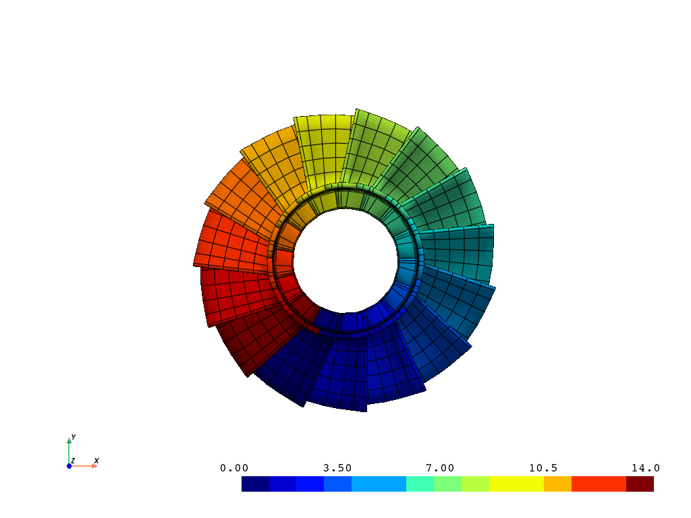
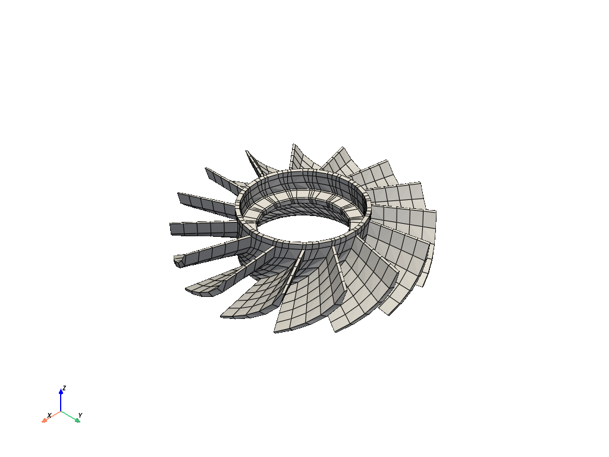

Note
Go to the end to download the full example code
Cyclic Model Visualization#
Visualize and animate a full cyclic model. This model is based on the jetcat rotor.
First, load the rotor. Notice how printing the rotor class reveals the details of the rotor result file.
# sphinx_gallery_thumbnail_number = 2
from ansys.mapdl.reader import examples
rotor = examples.download_sector_modal()
print(rotor)
PyMAPDL Result
Units : User Defined
Version : 15.0
Cyclic : True
Result Sets : 48
Nodes : 460
Elements : 210
Available Results:
EMS : Miscellaneous summable items (normally includes face pressures)
ENF : Nodal forces
ENS : Nodal stresses
ENG : Element energies and volume
EEL : Nodal elastic strains
ETH : Nodal thermal strains (includes swelling strains)
EUL : Element euler angles
EPT : Nodal temperatures
NSL : Nodal displacements
RF : Nodal reaction forces
Plot the rotor and rotor sectors
Note that additional keyword arguments can be passed to the plotting
functions of pymapdl-reader. See help(pyvista.plot for the
documentation on all the keyword arguments.
rotor.plot_sectors(cpos="xy", smooth_shading=True)
rotor.plot()
- 
- 
Plot nodal displacement for result 21.
Note that pymapdl-reader uses 0 based cumulative indexing. You could also
use the (load step, sub step) (4, 3).
rotor.plot_nodal_displacement(
20, show_displacement=True, displacement_factor=0.001, overlay_wireframe=True
) # same as (2, 4)
Animate Mode 21#
Disable movie_filename and increase n_frames for a smoother plot
rotor.animate_nodal_solution(
20,
loop=False,
movie_filename="rotor_mode.gif",
background="w",
displacement_factor=0.001,
add_text=False,
n_frames=30,
)
[(5.52155060432921, 5.5214282518334326, 5.110814907184016),
(3.164628201712816e-07, -0.00012203603295768417, -0.41073538068237303),
(0.0, 0.0, 1.0)]
Total running time of the script: ( 0 minutes 8.070 seconds)